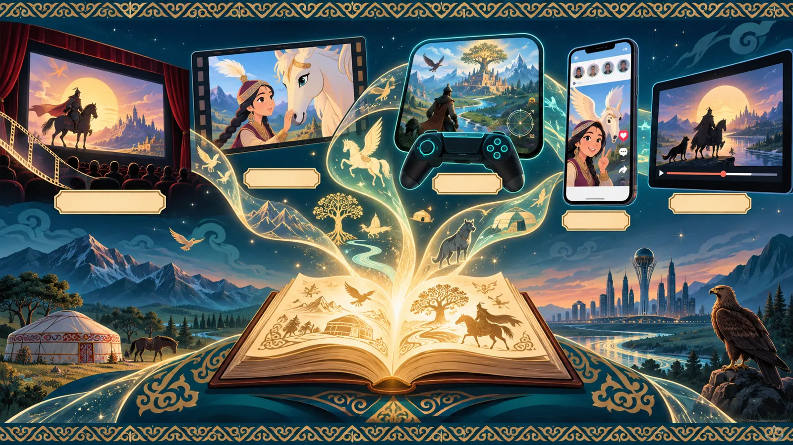
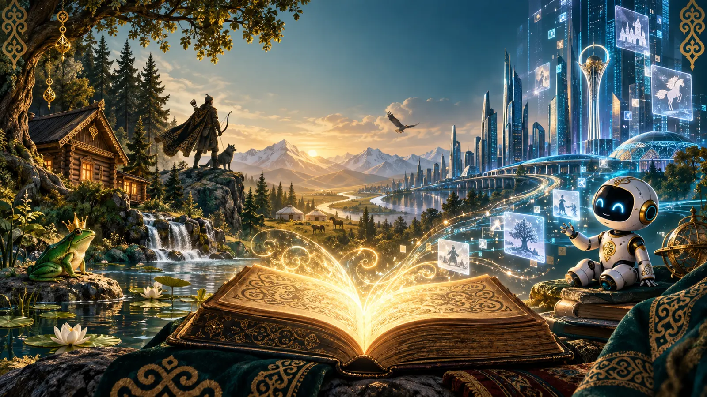
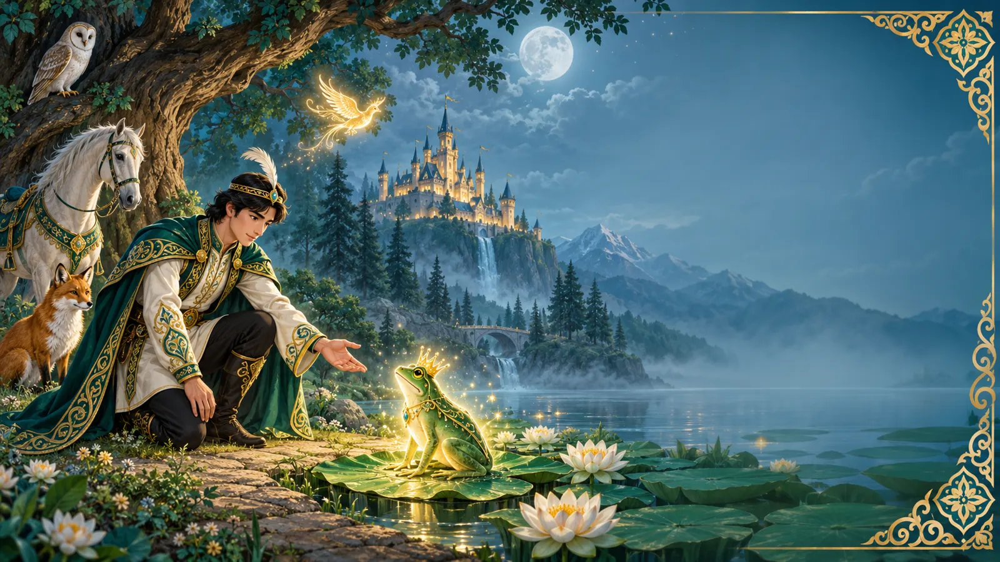
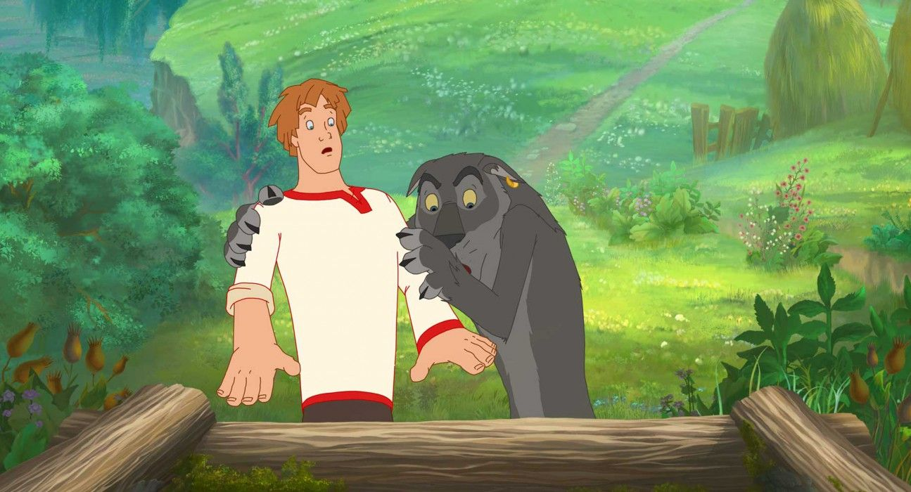
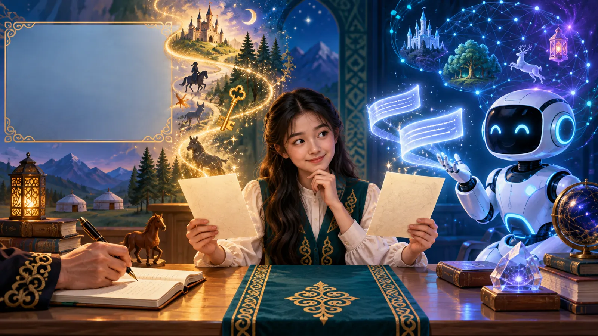
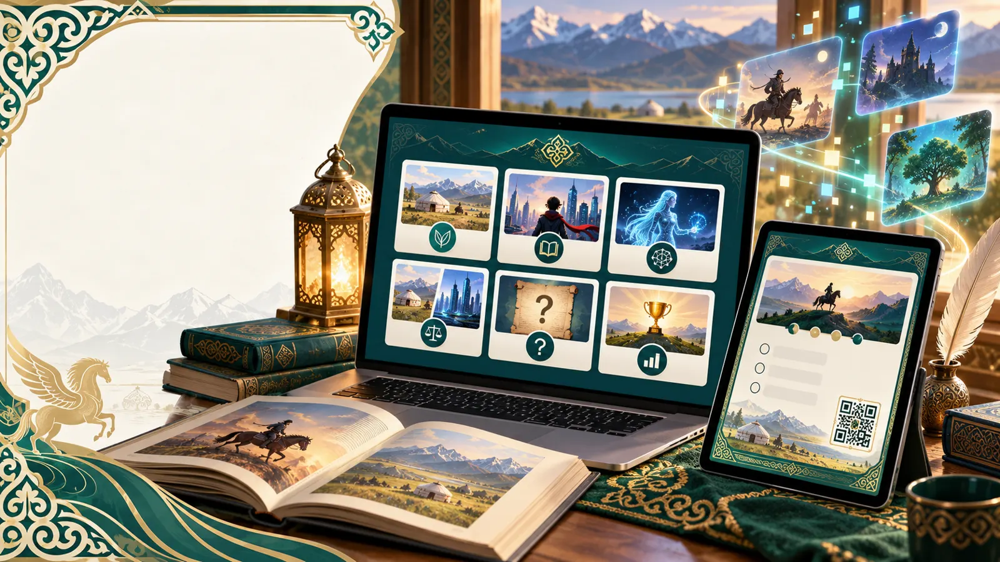

Актуальность
Сегодня дети встречают сказку не только в книге, но и в мультфильмах, играх и даже в историях, которые пишет искусственный интеллект (ИИ).
Важно понять, почему старые сюжеты до сих пор нам интересны.
Цель
Узнать, что помогает сказке оставаться любимой у школьников и как она меняется в цифровом мире.
Гипотеза
Сказки любят не за старинную форму, а за понятные темы: дружбу, выбор, смелость, справедливость и победу над трудностями.
Задачи
- Найти главные признаки народной сказки.
- Сравнить народную сказку, современную версию и сказку от ИИ.
- Провести анкету среди учеников 4 класса.
- Провести эксперимент «Человек или ИИ: кто написал сказку?».
- Создать и проверить цифровой путеводитель «Сказка 3.0».
Методы

регистрационного кода
(шифра)
Почему сказки остаются популярными в цифровую эпоху?
От народной сказки до искусственного интеллекта


Народная«Царевна-лягушка», «Иван-царевич и Серый Волк»
Современнаям/ф «Иван Царевич и Серый Волк», 2011
Сказка от ИИтекст, созданный нейросетьюГлавный результат
Меняется форма сказки, но её «сердце» остаётся тем же:
Выводы
- Сказка меняет форму, но сохраняет главное: героя, испытание и выбор.
- Цифровой мир не вытесняет сказку, а переносит её в кино, игры и тексты ИИ.
- Гипотеза подтвердилась: сказку любят за понятные людям ценности.
- Отличить сказку ИИ от сказки человека непросто: только 3 ученика из 20 угадали все 6 текстов.
Практическая значимость
Путеводитель «Сказка 3.0» можно использовать:
- на уроках литературы и чтения;
- для сравнения разных версий сказки;
- для самостоятельной работы дома;
- чтобы обсудить, что умеет и чего не умеет ИИ.
17 из 20 учеников после работы с путеводителем правильно назвали общие признаки сказок.
Источники
- Пропп В. Я. Морфология волшебной сказки. М.: Лабиринт, 2001.
- Афанасьев А. Н. Народные русские сказки: в 3 т. М.: Наука, 1984–1985.
- Қасқабасов С. Қазақтың халық прозасы. Алматы: Ғылым, 1984.
- Бабалар сөзі. 74-том. Қиял-ғажайып ертегілер. Астана: Фолиант, 2011.
- Hutcheon L., O'Flynn S. A Theory of Adaptation. London: Routledge, 2013.
- Miao F., Holmes W. Guidance for Generative AI in Education and Research. Paris: UNESCO, 2023.
Полный список (13 источников) — по QR-коду.


Откроется путеводитель «Сказка 3.0»: сказки, игры и тесты.